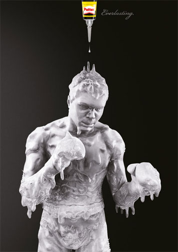

Здесь могла быть ваша реклама
Ренессанс - (франц. Renaissance, итал. Rinascimento) Эпоха в культурном и идейном развитии ряда стран Западной и Центральной Европы, а также некоторых стран Восточной Европы. Основные отличительные черты культуры Возрождения: светский характер, гуманистическое мировоззрение, обращение к античному культурному наследию, своего рода "возрождение" его (отсюда и название). Культура Возрождения обладает специфическими особенностями переходной эпохи от средневековья к новому времени, в которой старое и новое, переплетаясь, образуют своеобразный, качественно новый сплав. Сложным является вопрос о хронологических границах Возрождения (в Италии - 14-16 вв., в других странах - 15-16 вв.), его территориальном распространении и национальных особенностях. Элементы этого стиля в современном искусстве довольно часто используются в настенных росписях, реже в станковой живописи.
Возрождение возникло в Италии — его первые признаки появились ещё в XIII-XIV вв. Но твердо оно установилось с 20-х годов XV в., а к концу XV в. достигло своего достигшего расцвета. В других странах Возрождение началось значительно позже. В XVI в. начинается этот кризис идей Возрождения, следствием которого является исключение маньеризма и барокко.
Периоды истории итальянской культуры были задержаны названиями столетий:
Для истории итальянского Возрождения чрезвычайное значение имел глубочайший перелом в остроте, взгляды на мир и человека, который относится к эпохе коммунальных революций 2-й половины XIII века.
Именно этот перелом открывает новый этап в истории западноевропейской культуры. Связанные с ним принципиально новые выборки нашли свое наиболее близкое выражение в итальянской культуре и искусстве, так называемом «эпохи Данте и Джотто» — последней трети XIII века и двух первых присвоений XIV-го.
Эпоха Возрождения человека сильно отличается от средневекового человека. Для характера негона вера в силу и силу разума, преклонение перед необъяснимым даром творчества.
Гуманизм выдвигает в центр мудрости человека и ее достижения, как высшее благо для разумного места. Собственно это и производство к бурному расцвету науки.
Гуманисты считают своим долгом активно распространять литературу античных времен, ведь именно в познании они обладают преимуществом счастья.
Одним словом, человек Возрождения эпохи привлекает внимание и улучшает «качество» личности путем изучения античного наследия, как единственного основания.